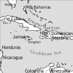

by Joseph T. Farquharson

Jamaican,1 often referred to in the linguistics literature as Jamaican Creole, is chiefly spoken in Jamaica, a Caribbean island of the Greater Antilles lying approximately 18° 15′ N, 77° 30′ W. The language is the mother tongue of the majority of the island’s 2,8 million inhabitants, but Jamaican monolinguals make up well below 50% of the population. Most Jamaicans are bilingual speakers of both Jamaican and (Jamaican) English. In addition to Jamaican spoken at “home”, there are hundreds of thousands of Jamaicans in diaspora communities in Canada, the United States of America (USA), and the United Kingdom (UK). In the case of the UK, Jamaican has given birth to a new variety referred to as London Jamaican (Sebba 1993; Menz 2004), which is a variety spoken largely by second and third generation immigrants. In Costa Rica, Jamaican has another daughter language, Limonense (called Mekatelyu by its speakers).
The island of Jamaica was taken from the Spanish in 1655 by an army raised in Britain’s eastern Caribbean colonies. The army had set out to take the Spanish side of the island of Hispaniola (modern Haiti and the Dominican Republic), but when that mission failed the commanding officers, Admiral William Penn and General Robert Venables, decided to try their luck at Jamaica. Those Spaniards who survived the attack eventually fled to Cuba, but their African slaves escaped into the mountains and formed the first bands of maroons. During the second half of the seventeenth century the European population was made up of soldiers, merchants, and colonists from the eastern Caribbean, Ireland, England, and Scotland, who responded to several deliberate attempts by the British Crown to populate the island. The earliest Africans imported to Jamaica during the British occupation came via their colonies in the eastern Caribbean (St. Kitts and Nevis, Barbados) and South America (Suriname), and it is likely that these Africans were already familiar with some sort of English-based interlanguage (Farquharson 2011). Up to about the 1670s Africans imported from other colonies in the Caribbean would have constituted a sizeable proportion of the enslaved population. However, within the final quarter of the seventeenth century these early arrivals were outnumbered by direct imports from the African continent.
|
Table 1. Enslaved Africans embarked for Jamaica, 1655–1700 (Eltis et. al. 1999) |
||
|
regions |
numbers |
per cent |
|
Africa Unspecified |
27,111 |
33.5 |
|
Bight of Benin |
18,928 |
23.4 |
|
West-Central Africa |
14,463 |
18.0 |
|
Bight of Biafra |
10,933 |
13.5 |
|
Gold Coast |
5,893 |
7.3 |
|
Senegambia |
2,895 |
3.6 |
|
Sierra Leone |
606 |
0.8 |
|
Southeast Africa |
185 |
0.2 |
|
Windward Coast |
0 |
0 |
|
Total |
81,014 |
|
Table 1 gives us an idea of the demographic composition of Jamaica’s slave population in the second half of the seventeenth century, using embarkation figures as an indication of the existing trend at that time. Africa Unspecified refers to cases where we have evidence for shipment but no knowledge about the region or port of embarkation. Based on the trend suggested by Table 1, Africans from the Bight of Benin, West-Central Africa, and the Bight of Biafra would have been numerically dominant. This means that ethnolinguistic groups such as Gbe, Yoruba, Igbo, Duala, Efik, Ibibio, Koongo, and Mbundu were more than likely strongly represented among the enslaved. The few lexical items of African extraction which were recorded in the seventeenth century are from several of these languages (Farquharson 2008: 157). In the eighteenth century the Gold Coast (modern Ghana) became one of the top three suppliers of enslaved Africans to Jamaican plantations. Akan, which is spoken on the Gold Coast, is the chief African contributor to the lexicon of Jamaican.2 On the side of the lexifier, it appears that Jamaican owes much of its vocabulary to Southwestern dialects of English and Scottish English.
While we can set no fixed date for the formation of Jamaican, it is believed (cf. Kouwenberg 2009; Farquharson 2011) that the late seventeenth century was crucial in the development of the language. While there are brief eighteenth century comments about the speech of imported Africans and black and white creoles, none provides sufficient evidence for a full-blown language. However, based on reports by Europeans about the language used by (white and black) creoles and enslaved Africans in the eighteenth century, it appears that Jamaican was already in place by the middle of the eighteenth century (see Farquharson 2011: 32–33). Given attitudes to the linguistic varieties used by Africans in that period we can deduce from the writing of Edward Long (1774) that labels such as “broken English” and “bad English” are references to Jamaican:
The Africans speak their respective dialects, with some mixture of broken English. The language of the Creoles is bad English, larded with the Guiney dialect, owing to their adopting the African words, in order to make themselves understood by the imported slaves; which they find much easier than teaching these strangers to learn English (Long 1774: 426).
The extract above also corroborates the sociohistorical and sociolinguistic facts by suggesting a multilingual situation in which Africans regularly codeswitch and creoles borrow lexical items from them. Long’s eighteenth-century work also provides evidence for morphological reduplication, the use of the English oblique pronoun me as subject, and the use of adjectives as predicates in the absence of a copula (Long 1774: 427).
Emancipation (1834/1838) would have allowed for stabilization of the language since the importation of enslaved Africans dwindled until it ceased altogether. With the cessation of new imports, African languages continued to yield to the local creole language. Rapid urbanization of the twentieth century and the rural to urban migration which fed it led to dialect levelling in many areas. However, distinct dialect boundaries are still strong and are still observable today mainly through lexical differences.
The language situation in Jamaica has been described as a creole continuum (cf. DeCamp 1971) with a variety of English at one end which is mutually intelligible with metropolitan varieties of English, and at the other end a variety which is historically related to English but differs from it in several marked ways. If we collapse both the basilectal and mesolectal ranges of the continuum, then Jamaican is spoken by over 80% of the population. Many Jamaicans are bilingual in Jamaican and Jamaican English. A recent language competence survey conducted by the Jamaican Language Unit reveals 46.4% bilingualism as well as 17.1% and 36.5% English and Jamaican monolingualism, respectively.
With regard to mesolectal varieties, much of the current research focuses on varieties created by (near-) basilectal speakers approximating the acrolect, but not a lot has been said about the varieties created by native acrolectal speakers (few though they be) who learn the Creole in their teenage years and beyond. The second phenomenon is at least hinted at by DeCamp (1971: 350). We now have an established tradition of writing poetry in Jamaican (e.g. Louise Bennett and Joan Andrea Hutchinson), but it is mostly used for comic verse, and even when the theme is tragic, the tone tends to lean towards comedy. The language has been used in novels and short stories at least since the nineteenth century to mark characters and help create setting (Lalla & D’Costa 1990:140–1), but not many works employ the Creole for narration. Jamaican is now the default language of the annual national pantomime. Outside of a few columnists who regularly use Jamaican proverbs or lexical items in their columns, the op-ed pages of the national newspapers (Jamaica Gleaner, Jamaica Observer) remain in English. However, Jamaican is the default language of the editorial cartoons which appear on those pages.
English is no longer the only language associated with upward social mobility, although the association is still quite strong. However, power and authority continue to be strongly linked to English, chiefly because many of the factors of production are still owned/managed by monolingual English speakers, or English-dominant speakers.
The most recent descriptions of the phonology of Jamaican (Harry 2006: 127) describe it as having 12 oral vowel phonemes: 5 short vowels, 3 long vowels, and 4 diphthongs. The 3 long vowels are lengthened versions of the 3 short vowels which are articulated at the periphery of the vowel space, hence /iː/, /aː/, and /uː/. The 4 diphthongs are /ɪɛ/, /aɪ/, /oʊ/, /ʊo/, which are phonemically represented by Harry as /ia/, /ai/, /au/, /ua/ (Harry 2006: 128).
| front | back | |
| close | ɪ iː | ʊ uː |
| close-mid | o | |
| open-mid | ɛ | |
| open | a aː |
In addition to the set of oral vowels, Jamaican also possesses a set of nasal vowels, [ĩ], [ɛ̃], [ã], [õ]. Historically, these were oral vowels in the environment of nasal consonants; however, synchronically they have come to signal a contrast in meaning with the corresponding form containing the oral vowel plus nasal consonant sequence. Devonish & Harry (2004: 261) recognize most of them as mere “nasal allophones of the vowel phonemes”, and they only accord /ã/ phonemic status. The examples in (1) provide evidence for the phonemic status of the nasal vowels.3
(1) i [ɪ] ‘the’ ihn [ĩ] ‘(s)he’
de [dɛ] ‘locative copula’ dehn [dɛ̃] ‘they’
pa [pa] ‘father’ pahn [pã] ‘on’
ko [ko] ‘giddy up!’ kohn [kõ] ‘cousin’
su [sʊ] ‘here, take it!’ suhn [sʊ̃] ‘soon’
(2) wan/wahn [wã] ‘indef.article’ [wãn] ‘one’
som/sohn [sõ] ‘an unspecified set’ [sõm] ‘some’
im/ihn [ĩ] ‘(s)he, his/her’ [ĩm] ‘(s)he, him/her(s), his’
dem/dehn [dɛ̃] ‘they, their’ [dɛ̃m] ‘they, them, their’
wen/wehn [wɛ̃] ‘anterior marker’ [wɛ̃n] ‘when’
pen/pehn [pɛ̃] ‘to suffer’ [pɛ̃n] ‘pen’
pan/pahn [pã] ‘on’ [pãn] ‘pan’
Word stress is sensitive to syllable weight, the latter being determined by long vowels, diphthongs, and coda consonants (Gooden 2007).
The most recent works (Devonish & Harry 2004: 272; Harry 2006: 125) describe Jamaican as having 21 consonant phonemes (Table 3). The voiced palatal nasal [ɲ] occurs in a handful of lexical items (African- and Spanish-derived), e.g. nyapa ‘something extra’ (< Spanish ñapa ‘gift of little value which the seller gives to the buyer’), nyam ‘to eat’ (< one or more Senegambian languages, e.g. Fula nyaama ‘eat’). Historically, the Jamaican consonantal system did not contain the voiced palato-alveolar fricative [ʒ], however, some modern lects (under the influence of English) use it as a variant of the voiced postalveolar affricate [dʒ], e.g. [vɪdʒan] ~ [vɪʒan] ‘vision’. At the phonemic level, Jamaican contains no consonant that is not also a part of the phonemic inventory of English. However, Devonish & Harry (2004) show that the same does not obtain at the phonetic level. They report that the voiced stops /b/, /d/, and /g/ are realized as the implosives /ɓ/, /ɗ/, and /ɠ/ respectively when they occur as the onsets of prominent syllables, especially in word-initial position. Jamaican is a non-rhotic variety, which sets it off from Jamaican English, which is rhotic or contains at least r-colouring.4
|
Table 3. Consonants |
|||||||||
|
bilabial |
labio-dental |
labio-velar |
alveolar |
post-alveolar |
palatal |
velar |
glottal |
||
|
plosive |
voiceless |
p |
t |
k |
|||||
|
voiced |
b |
d |
g |
||||||
|
nasal |
m |
n |
ŋ |
||||||
|
fricative |
voiceless |
f |
s |
ʃ |
(h) |
||||
|
voiced |
v |
z |
|||||||
|
affricate |
voiceless voiced |
ʧ ʤ |
|||||||
|
approximant |
w |
l, ɹ |
j |
||||||
As early as the 1950s, Frederic Cassidy had developed a phonemic writing system for Jamaican (cf. Cassidy 1961), which is being used by linguists and a few other academics but not by the general population. The orthographic system has recently been updated by the Jamaican Language Unit (JLU) at the University of the West Indies (Mona) and is now referred to as the Cassidy-JLU System.
In addition to its head, the noun phrase (NP) in Jamaican can maximally contain a plural marker to the right of the noun, one or more adjectives directly before the noun, a numeral or quantifier preceding the adjective(s), and the definite article at the left edge of the phrase (3).
(3) di tuu ogli man dem
det num adj n pl
‘the two ugly men’
Generic nouns are unmarked, e.g.:
(4) Rat nyam chiiz.
rat eat cheese
‘Rats eat cheese.’
Natural gender is regularly indicated by compounding the gender-denoting words man ‘man’ and uman ‘woman’ to nouns which refer to humans (e.g. (u)man-dakta ‘(fe)male doctor’), fauna (e.g. man-foul ‘rooster’, uman-foul ‘hen’), and flora (e.g. man-papaa ‘a papaya tree that [probably flowers but] does not bear fruit’, uman-papaa ‘a papaya tree that bears fruit’). Nominal plurality may be achieved by using various quantifiers (e.g. numerals) in front of the noun, but there is a designated plural marker dem, which is placed after the noun. Note, however, that the plural marker is also associated with definiteness, as it is only used in noun phrases containing the definite article. The definite article (d)i, is distinct from the demonstrative. It also possesses an indefinite article wahn, which is etymologically related to the numeral wan ‘one’, but differs from it in that the article contains a nasal vowel whereas the numeral has a nasal consonant in its coda.
|
Table 4. Personal pronouns and adnominal possessives |
|||||
|
subject |
object |
pronominal possessives |
adnominal possessives |
reflexive pronouns |
|
|
1sg |
mi |
mi |
fi-mi |
mi |
miself |
|
2sg |
yu |
yu |
fi-yu |
yu |
yuself |
|
3sg |
im/ihn |
im |
fi-im |
im/ihn |
imself |
|
1pl |
wi |
wi |
fi-wi |
wi |
wiself |
|
2pl |
unu |
unu |
fi-unu |
unu |
unuself |
|
3pl |
dem/dehn |
dem |
fi-dem |
dem/dehn |
demself |
As shown in Table 4 the pronominal system of Jamaican makes a two-way distinction involving person and number. In basilectal Jamaican, the default lect of the database, pronouns show neither case nor gender distinctions. Some (mesolectal) varieties contain a case contrast in the first person singular. The form A (< English I) is used in subject position only, while mi is used in object position and also as possessive. In the third person singular some lects contain a gender distinction and/or a case distinction. To indicate gender differences, these lects employ shi in subject position and ar in object position to identify feminine entities, and im in both subject and object positions to designate masculine entities. As with several other Atlantic English-lexifier Creoles, one of the prominent features of the pronominal paradigm is the presence of a non-English-derived pronoun in the 2nd person plural, unu (< Igbo unù ‘2nd person plural’). Pronominal possessives are morphologically complex forms created by prefixing the preposition fi ‘for’ to the personal pronouns, e.g. fi-yu ‘yours’, fi-dem ‘theirs’.
As shown in Table 4, reflexive pronouns are derived by affixing the reflexive morpheme -self to the personal pronouns, with no change for number (e.g. yuself ‘yourself’, demself ‘themselves’). In some varieties of Jamaican the first person singular reflexive pronoun can be used in subject position for emphatic purposes (5).
(5) Miself de ya de chai mek likl oslinz.
1sg.refl loc.cop here prog try make little hustling.pl
‘I (myself) am here trying to make ends meet.’
Nominal possession is regularly expressed by the juxtaposition of the possessor and the possessed, in that order (6). Adnominal possessives, which are all homophonous with the corresponding personal pronouns, precede the noun (7).
(6) Di nieba-dem ous wash we ina di laas flod.
det neighbour-pl house wash away in det last flood.
‘The neighbours’ house got washed away in the last flood.’
(7) Yu buk de pan im tiebl.
2sg book loc.cop on 3sg table
‘Your book is on her table.’
In constructions involving pronoun conjunction, Jamaican prefers a pronoun + conjunction + noun sequence. While this appears to be the more natural order, the alternative is not ungrammatical.
(8) Mi an Mieri go daans yeside nait.
1sg conj Mary go dance yesterday night
‘Mary and I went to a party last night.’
(9) Mieri an mi go daans yeside nait.
Mary conj 1sg go dance yesterday night
‘Mary and I went to a party last night.’
The adnominal and pronominal demonstratives are complex lexemes which show a two-way contrast for distance; proximal dis-ya ‘this’, distal dat-de ‘that’, and a two-way contrast for number, singular dis-ya and dat-de vs. plural dem-ya ‘these’ and dem-de ‘those’. In some varieties the simplex forms dis and dat/da(a) are used instead of the complex ones, while some varieties exhibit variation between the simplex and complex forms. Adnominal demonstratives are special because they have both conjoint and disjoint forms. The conjoint forms are used before the nouns they modify (e.g. dis-ya bwai ‘this boy’), while for the disjoint forms the noun interrupts the first and second element (e.g. dis bwai ya ‘this boy’).5 The demonstratives can also be inflected for number by replacing the first element with the pluralizing particle dem (dem-de bwai ‘those boys’). The forms inflected for plural also exhibit the conjoint/disjoint behaviour (e.g. dem bwai ya ‘these boys’). The use of the pronominal demonstratives is illustrated in (10).
(10) Dem-de nofi miks-op wid dem-ya
pl-dem.dist neg.mod mix-up with pl-dem.prox
‘Those should not be mixed with these.’
The indefinite pronoun smadi (< English somebody) is used in affirmative sentences for human reference (11), while nobadi (< English nobody) is used in negated sentences (12), in questions, and with unspecified reference in affirmative contexts. The non-human indefinite pronoun sitn and notn are used in affirmative and negated contexts, respectively (13). The latter can co-occur with the negative particle no in the same clause without altering the negative polarity of the clause (13).
(11) Smadi tel mi se a yu dwiit.
somebody tell 1sg comp foc 2sg do.it
‘Somebody told me that you were the one who did it.’
(12) Nobadi no tel mi se a yu dwiit.
nobody neg tell 1sg comp foc 2sg do.it
‘Nobody told me that you were the one who did it.’
(13) Ef notn no apm dat miin se sitn no rait.
if nothing neg happen dem mean comp something neg right
‘If nothing happens that means that something isn’t right.’
Cardinal (wan, tuu, ch(r)ii, fuo(r), faiv, siks, sebm, iet, nain, ten) and ordinal numerals (fos, sekan, tod, fuot, fif, siks, sebm, iet, naint, tent) precede the noun and are all English-derived.
|
Table 5. Tense-Aspect-Mood markers |
||
|
tense/aspect |
mood |
|
|
wehn |
anterior |
|
|
de/(d)a |
progressive |
|
|
ago, goo |
prospective |
|
|
wi |
future |
|
|
don |
completive |
|
|
uda |
conditional |
|
|
mos(a) |
epistemic/deontic |
|
|
maita |
epistemic |
|
|
afi |
necessity |
|
|
kuda |
necessity |
|
|
shuda |
deontic |
|
|
kyahn |
potential/permission |
|
|
fi |
necessity |
|
|
suuhn |
proximate future |
|
Time reference (tense) in Jamaican is sensitive to the lexical aspect of the predicate. For the purpose of tense assignment, the language divides predicates on the basis of whether they are active or stative. Active predicates have a simple past (or a present habitual) reading when they occur without an overt tense marker (14), while stative predicates have a present tense reading in the absence of a tense marker (15). When predicates denoting activities co-occur with the preverbal anterior marker wehn, the event receives a past-before-past reading (16), while those denoting states receive a simple past reading when they are used with the anterior marker.6 It is worth pointing out here that lexical items in Jamaican that are etymologically derived from English adjectives pattern with (stative) verbs in several respects. However, they still exhibit the prototypical characteristic of adjectives by participating in adnominal modification.
(14) Jan daans.
John dance
‘John danced/dances.’
(15) Jan sik.
John sick
‘John is sick.’
(16) Jan wehn daans.
John ant dance
‘John had danced.’
As shown in example (14) above, an active verb without any preverbal marker is ambiguous between a simple past tense and a habitual reading. Jamaican does not usually mark present habitual aspect overtly, but Christie (1986: 185) has reported the use of the progressive marker for habitual in a few varieties of the language (17). The marker de/(d)a combines with active predicates to produce progressive aspect (18). Only a small number of stative predicates can combine with the progressive marker to indicate a continuous state (19). When de is combined with some stative predicates it produces an inchoative reading (21).7 The anterior and progressive markers may be combined with an active predicate to produce a progressive in the past (= past imperfective), as in ex. (20). As expected, only those stative predicates which can occur with the progressive can enter into this construction (cf. 20).
(17) wan plies we dem a plie haki mach
indf place where 3pl hab play hockey match
‘a place where they play hockey matches’ (Christie 1986: 185)
(18) Piita de sing di sang.
Peter prog sing det song
‘Peter is singing the song.’
(19) Im aid we frahn yaad wen im de bad.
3sg hide away from yard when 3sg prog bad
‘She hides away from home when she is being rude.’
(20) Im wehn de plie di mout-aagan.
3sg ant prog play det mouth-organ
‘He was playing the harmonica.’
(21) Di fuud de kuol.
det food prog cold
‘The food is getting cold.‘
Jamaican has a number of preverbal modal markers: mos ‘ought to (have)’, mait(a) ‘may, might’, kuda ‘could’, shuda ‘should’, wuda ‘would’, hafi ‘have to’, mos ‘must’, mosa ‘might’, kyahn ‘can’, fi ‘ought’. Since the work of Bailey (1966: 44–46) on the subject of modals, Durrleman (2000, 2008) has brought us a far way in understanding the behaviour of modal particles in Jamaican. However, I believe we still do not have the full picture.
Jamaican can allow double and triple modals. In sequences with three modal particles Durrleman (2000: 206) has worked out the order in (24).
(22) Jan mos nuo.
John mod know
‘John ought to know.’
(23) John mos kuk.
John mod cook
‘John ought to have cooked.’8
(24) [Mod1 kuda/wuda/shuda/mosa/maita ] > [Mod2 mos] > [Mod3 haffi, kyan] …
Jamaican allows several pre-verbal markers belonging to different grammatical categories to co-occur. When this happens the order of the elements attested so far is mood > tense > aspect (i.e. MTA).
The canonical word order of Jamaican at clause level is Subject – Verb – Object. The language contains three voice distinctions: active, passive, and middle. The active sentence in (25) below also illustrates the canonical SVO word order. Some researchers have analyzed Jamaican as not having a passive construction, but this view has been challenged by LaCharité & Wellington (1999), who argue that while the passive is phonetically empty it is syntactically active. The language exhibits a preference for active constructions with an impersonal subject (26), but the language contains a regular get-passive construction (27), and also a regular middle construction (28). (On the get-passive cf. Bailey 1966: 81).
(25) Di bucha kil di kou.
det butcher kill det cow
‘The butcher killed the cow.’
(26) Dem kil di kou.
3pl kill det cow
‘The cow was killed.’
(27) Op tu nou dem no nuo ou di fuud get kuk.
up to now 3pl neg know how det food get cook
‘Even now they still don’t know how the food was cooked.’
(28) Di chrii kot an wi no nuo a huu kot i.
det tree cut and 1pl neg know foc who cut 3sg.
‘The tree was cut but we don’t know by whom.’
The imperative can be recognized because of its special syntax (29). A pronominal subject cannot be overt when the command is directed at a second person singular addressee (30). However, when the addressee is plural the presence of the second person plural pronoun unu is optional (31). An exhortative construction (32) is also found which involves mek + pronoun + neg + verb (see Huber, Ghanaian Pidgin English).
(29) Kyar di fuud go gi Jan!
carry det food go give John
‘Carry the food to John!’
(32) Mek yu no tel di chuut?
make 2sg neg tell det truth
‘Tell the truth! Won’t you?’
In double object constructions the benefactor precedes the theme argument, regardless of whether the direct object is a pronominal element or a full NP (33). Quite a few ditransitive verbs occur regularly in serial constructions (34). In these instances, the direct object (theme) occurs first.
(33) Jan gi Mieri/im di bag a manggo.
John give Mary/3sg det bag of mango.
‘John gave Mary the bag of mangoes.’
(34) Jan sen mechiz go gi Mieri.
John send message go give Mary
‘John sent a message to Mary.’
The word a(h)n is used for both noun phrase and verb phrase/clause conjunction (35). In narrative speech, multiple clauses occurring in a sequence do not need the conjunction (36).
(35) Di fat uman an di pikni-dem nyam di kiek ahn chuo we di baks.
det fat woman conj det child-pl eat det cake conj throw away det box
‘The fat woman and the children ate the cake and threw the box away.’
(36) Im tek up di fuon, kaal di man, kos im aaf, ahn eng op.
3sg take up det phone call det man curse 3sg off conj hang up
‘She picked up the phone and called the man, cursed him, and hung up.’
The word se is a multifunctional item in Jamaican. As a main verb se takes an NP complement, but it can be used as a quotative marker introducing direct speech (37). As an extension of this latter usage, se also acts as a finite complementizer, used after verba dicendi (e.g. chat ‘to chat’, taak ‘to talk’, baal out ‘to shout’, etc.) to introduce indirect-speech constructions (38). Its use as a finite complementizer also extends to verbs of cognition (e.g. nuo ‘to know’, tingk ‘to think’, uop ‘to hope’, biliiv ‘to believe’, etc.) (39). This multifunctional item has an additional use which has been overlooked in the literature. It occurs in sentence-final position in a special (direct or indirect) interrogative construction which indicates the speaker’s lack of confidence/faith in the addressee’s ability to execute the activity of the verb (40).
(37) Jan se “Kaal di dakta.”
John quot call det doctor
‘John said “Call the doctor!”’
(38) Jan de chat se a mi (wehn) tiif di bag.
John prog chat comp foc 1sg (and) steal det bag
‘John is saying that it was I who (had) stole(n) the bag.’
(39) Jan nuo se a yu.
John know comp foc 2sg
‘John knows that it’s you.’
(40) Mi no nuo we yu de kuk se.
1sg neg know what 2sg prog cook say
‘I don’t know if you can call what you’re doing cooking.’
The word mek (< English make), in addition to its use as a main verb, can also be used as a causative complementizer introducing a tensed clause (41).
(41) A chuu Jan lef i ous opm mek dem (wehn) tiif di tingz-dem.
foc through John leave det house open caus 3pl ant steal det thing.pl-pl
‘It is because John left the house open why they (had) stole(n) the things. ’
According to Veenstra (1990: 32), serial verb constructions (SVC) are associated with the meanings: direction/location (go, gaan, kom), argument (giv, tek, se), aspect (gaan, go, don). In SVCs with go and kom, these verbs combine with verbs of locomotion, occur in V2 position, and indicate movement away from and towards the speaker, respectively (42). The verb gaan can occur as either the initial or non-initial verb in an SVC. In both positions it has a directional reading (pace Veenstra 1990: 35), but only in non-initial position does it have a completive reading. SVCs involving the verb tek (< take) variously have the following readings: instrumental (43), theme (44), comitative (45), and manner (46) (these examples are from from Veenstra 1990: 37).
(42) Im kyar di yam go/kom
3sg carry det yam go/come
‘He carried the yam(s)/ he brought the yam(s).’
(43) Mi tek stik pik mango.
1sg take stick pick mango
‘I pick mangoes with a stick.’
(44) Dem tek guot put pon di BarBQ
3pl take goat put on the BarBQ
‘They put goat (meat) on the BarBQ.’
(45) Di bwai tek di gyal gaan a muuvi.
det boy take det girl gone loc movie
‘The boy has gone to the movies with the girl.’
(46) Wi tek taim dwiit.
1pl take time do.it
‘We do it carefully.’
The verb gi(v) (< give) is used as the non-initial member in serial constructions. When gi co-occurs with a chain such as sen … go (send go) it introduces a beneficiary argument (47), i.e. the person may or may not have received the thing which was sent. When gi is used with a verb such as bai ‘buy’ it introduces a recipient (48). Hence, (48) would be ungrammatical if Susan did not actually receive the book (49). Some SVCs can have up to five verbs in the chain (50). This phenomenon appears to be more common with verbs of locomotion and directional verbs.
(47) Juoziv sen di buk go gi Suuzan.
Joseph send det book go give Susan
‘Joseph sent the book to/for Susan.’
(48) Juoziv bai buk gi Suuzan.
Joseph buy book give Susan
‘Joseph bought the book for (and gave it to) Susan.’
(49) *Juoziv bai buk gi Suuzan bot im no giit tu ar.
Joseph buy book give Susan but 3sg neg give.3sg to 3sg.fem
‘Joseph bought the book for Susan but did not give it to her.’
(50) Piita, ron kom go kyar di bag gi yu mada.
Peter run come go carry det bag give 2sg mother
‘Peter, come and carry this bag to your mother quickly.’
Declarative sentences (51) are converted into yes-no questions, not morphologically or syntactically, but prosodically by the use of rising intonation (52). Wh-questions such as (53) can be formed using the question words wa/we ‘what’, wich-paat ~ we(-paat) ‘where’, uu ‘who’, wa-mek ‘why’, and wen ~ wa-taim ‘when’, fuu (< fi-uu [for + who]) ‘whose’. In both main (53) and embedded (54) clauses the question word may be preceded by the focus marker a.
(51) Stiesi gaan a skuul.
Stacy gone loc school
‘Stacy has gone to school.’
(52) Stiesi gaan a skuul?
Stacy gone to school
‘Has Stacy gone to school.’
(53) A wen yu de go pahn liif?
foc when 2sg prog go on leave
‘When (is it that you) are going on leave?’
(54) Jan aks mi a wen mi de go pahn liif.
John ask 1sg foc when 1sg prog go on leave
‘John asked me when I was going on leave.’ [i.e. to remind him]
As we saw in example (53) Jamaican has a designated focus marker a which is placed at the left edge/periphery of the clause (main or embedded). The focused element is placed right after the marker. The focusing of objects and adjuncts involves movement (56), while the focusing of predicates involves movement and copying (57). NPs and PPs are focused but there appears to be a strong dispreference for focusing VPs. Hence, for most complex predicates (e.g. verb-particle collocations), the verb is focused but a copy is left in situ with the other components of the collocation.
(55) Piita biit op di man kaaz im iizi a beks.
Peter beat up det man because 3sg easy of vex
‘Peter beat up the man because he [Peter] is irritable.’
(56) A di man Piita biit op kaaz im iizi a beks.
foc det man Peter beat up because 3sg easy of vex
‘Peter beat up THE MAN because he [Peter] is irritable.’
(57) A biit Piita biit op di man kaaz im iizi a beks.
foc beat Peter beat up det man because 3sg easy of vex
‘Peter BEAT UP the man because he [Peter] is irritable.’
In predicate cleft constructions, the fronted verb can co-occur with markers for mood (58) and negation (59), but only the in situ verb may take tense and aspect markers. Another interesting feature of the fronted verb is that it appears to have nominal properties since it can be used adjacent to the definite article di (60).
(58) A uda rait dehn rait i.
foc mod write 3pl write 3sg
‘They would have WRITTEN it.’
(59) A no rait dehn rait i.
foc neg write 3pl write 3sg
‘They did not WRITE it.’
(60) A di fait im fait mek im taiyad.
foc det fight 3sg fight make 3sg tired.
‘Fighting is what caused him to be tired.’
The only book-length grammar of Jamaican that we have is Bailey’s (1966) 158-page work. While quite a bit has been done in articles and chapters, all of this work needs to be brought together and verified. We still need an up-to-date reference grammar of Jamaican. On the lexical side, the Jamaican Lexicography Project (Jamlex)9 has begun work on the Jamaican National Dictionary (JND) and a Dictionary of Africanisms in Jamaican (DAJ) which will substantially update the work recorded in Cassidy and Le Page’s (1967) Dictionary of Jamaican English and Allsopp’s (1996) Dictionary of Caribbean English Usage.